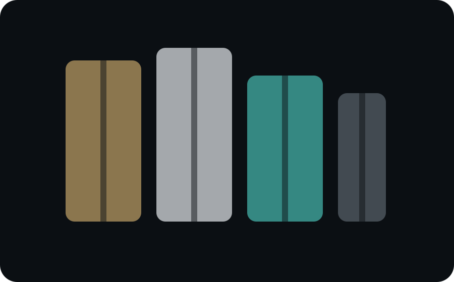

Технологии THERMOGLASS (А. Костюченко)
Монтаж интеллектуальных систем: Smart Glass, стеклопакеты с электроподогревом, углеродно-композитный профиль. Энергоэффективность без компромиссов для премиальных и коммерческих объектов.
Светопрозрачные конструкции для девелоперов, архитекторов и сложных объектов
Мы не привязаны к одному заводу. Контролируем процесс реализации СПК на объекте от поставки материалов на оконный завод до исполнительной документации и передачи Техническому надзору. Собираем под каждый проект инженерное решение, а не «окно».
Факты доверия
Монтаж интеллектуальных систем: Smart Glass, стеклопакеты с электроподогревом, углеродно-композитный профиль. Энергоэффективность без компромиссов для премиальных и коммерческих объектов.
Скрытый фурнитурный паз, вспененный EPDM-уплотнитель, усиленная герметичность. Максимальная тепло- и шумоизоляция для конструкций из ПВХ, алюминия, дерева и карбона.
Расчет нестандартных узлов и проектирование сложных фасадных решений. Реализация архитектурного замысла с гарантией прочности и успешным прохождением госэкспертизы.
Контракты на поставку профильного сырья, фурнитуры и комплектующих непосредственно на заводы-переработчики. Контроль цепочки поставок, минимизация логистических рисков и приоритетная очередь производства для наших объектов.
Системный подход: внутренний регламент, превосходящий требования ГОСТ 30971-2012. Цифровой фотоотчет каждого этапа, строгое соблюдение сроков, любые объемы и география РФ/СНГ.
Физическая защита: покрытие Protectapeel для стекла, ПВХ и алюминия от царапин, краски и загрязнений на период строительства. Юридическая защита: полный пакет сертификатов, акты освидетельствования скрытых работ (АОСР), исполнительные схемы. Расширенные гарантии, постмонтажный аудит, страхование ответственности подрядчика. Готовность к сдаче объекта без замечаний технадзора. Защита инвестиций застройщика.
О компании
Любой завод ограничен своими производственными линиями и маржинальностью конкретного сырья. Мы ограничены только техническим заданием вашего проекта. Мы не продаем «то, что есть в номенклатуре одного цеха», мы собираем оптимальное решение под конкретные KPI объекта, выступая единым центром ответственности.
Мы формируем спецификацию из лучших доступных на рынке решений (от интеллектуального стекла Thermoglass и композитных профилей до сложных узлов от Рубикона), а не навязываем ограничения одного бренда.
При сжатых дедлайнах или больших объемах мы диверсифицируем производственный заказ между несколькими сертифицированными партнерами, параллельно мобилизуя ресурсы «Монтажного Мира Окон». Срыв сроков одним цехом исключен.
Агрегация объемов и прямые закупки комплектующих позволяют нам фиксировать спеццены и условия, недоступные при работе с одним заводом-монополистом.
Мы не конкурируем с производителями. Мы управляем их ресурсами и мощностями исключительно в интересах вашего объекта, гарантируя прозрачность и качество на каждом этапе.
Продуктовая полка
Показываем не «каталог окон», а набор инженерных возможностей: карбон, дерево-алюминий, скрытая автоматика, греющие стеклопакеты, фасады, порталы и стандартные СПК для больших объёмов.

Carbon Glass / ThermoGlass
Для крупных проёмов, сложной архитектуры, премиальных и коммерческих объектов, где обычная система ограничивает замысел.

ФУТУРУСС
Умное управление, скрытые решения внутри оконного блока и интеграция в современные ПВХ, алюминиевые, деревянные и карбоновые конструкции.

Stoller
Порталы, фасады и окна для вилл, ресторанов, отелей, реставрации и объектов, где материал должен выглядеть дорого, тепло и архитектурно.

ПВХ / алюминий / дерево / карбон
Цена, срок, статика, теплотехника, вид фасада, монтажная логистика и требования технадзора — всё это важнее любви к одному профилю.
Команда
Прямые контакты с ключевыми фигурами. Без колл-центров и менеджеров-посредников. Вы общаетесь с теми, кто принимает решения.
 АЗ
АЗДиректор по стратегическому развитию
Инициация партнерств с ведущими девелоперами и архитектурными бюро. Пре-сейлз сложных и флагманских проектов. Точка входа для стратегических задач.
Написать в Telegram ДБ
ДБИсполнительный директор
Полный контроль реализации: от подписания договора до сдачи объекта. Управление сетью подрядчиков (РУБИКОН, Монтажный Мир Окон), логистикой и строгое соблюдение сроков СМР.
Написать в Telegram ДЦ
ДЦКоммерческий директор (Key Account)
Ведение ключевых B2B-клиентов, защита проектов перед ГИПами и технадзором, участие в тендерах. Превращает архитектурный замысел в согласованную смету и график поставок.
Написать в Telegram ЕЖ
ЕЖОперационный директор
Архитектура бизнес-процессов и финансовый контроль. Обеспечивает прозрачность сделок, сопровождение эскроу-счетов и бесперебойное функционирование всех систем компании.
Написать в TelegramРуководитель проектной координации
Первичная квалификация проектов, сбор исходных данных и оперативная связь с объектом. Ваш «глаз на площадке» на этапе подготовки, логистики и запуска работ.
Написать в Telegram ОС
ОСГлавный бухгалтер
Безупречный документооборот: акты КС-2/КС-3, счета-фактуры, НДС. Гарантируем корректное закрытие периодов и отсутствие вопросов со стороны бухгалтерии заказчика.
Написать в Telegram ЕР
ЕРФинансовый управляющий
Бюджетирование проектов, финансовое моделирование и подготовка отчетности. Выстраивает прозрачную экономику каждой сделки.
Написать в Telegram АМ
АМКонтролер расчетов
Управление графиками платежей, сверка взаиморасчетов и контроль финансовой дисциплины на всех этапах реализации проекта.
Написать в TelegramСтратегические партнёры
Мы не просто закупаем комплектующие, мы выстраиваем управляемые цепочки поставок с прямой ответственностью за результат на каждом этапе.
ОКНОТИКА выступает единым центром ответственности (Single Point of Responsibility) перед заказчиком, партнёры несут солидарную гарантию на все строительно-монтажные работы (СМР).
Прямые договоры на поставку профильных систем, фурнитуры и стеклопакетов. Минимизация логистических и санкционных рисков, гарантированные сроки производства и приоритетная очередь для наших объектов.
Внедрение инновационных материалов: карбоновые профили, стеклопакеты с электроподогревом, системы снеготаяния. Предоставляем полные протоколы испытаний НИИСФ РААСН и расчёты статики для прохождения госэкспертизы.
Официальная интеграция передовых инженерных решений: скрытый фурнитурный паз, автоматика, усиленное крепление петель непосредственно в армирование (нагрузка до 180 кг), вспененный EPDM для абсолютной герметичности контура.
Контакты
Напрямую связывайтесь с отделом работы с девелоперами и архитекторами. Оперативно отвечаем на запросы ТЗ и спецификаций.
Юридический и фактический адресМосква, улица Макаренко, 2/21с2
География работРеализуем проекты по всей территории РФ и странам СНГ.